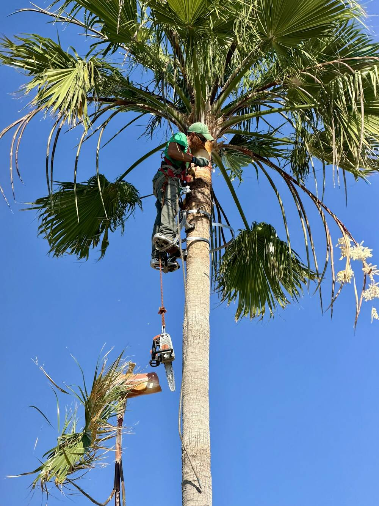
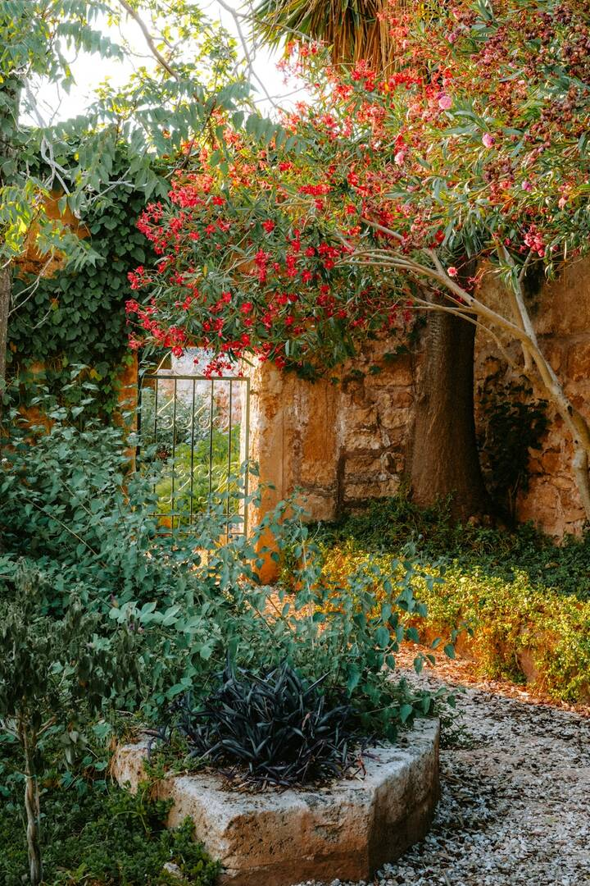
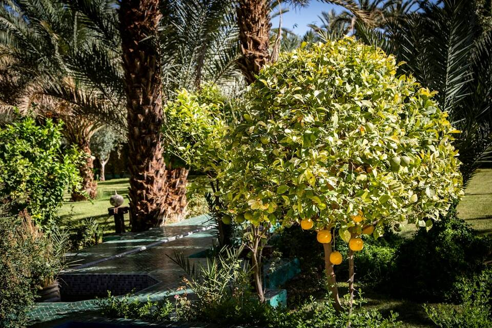
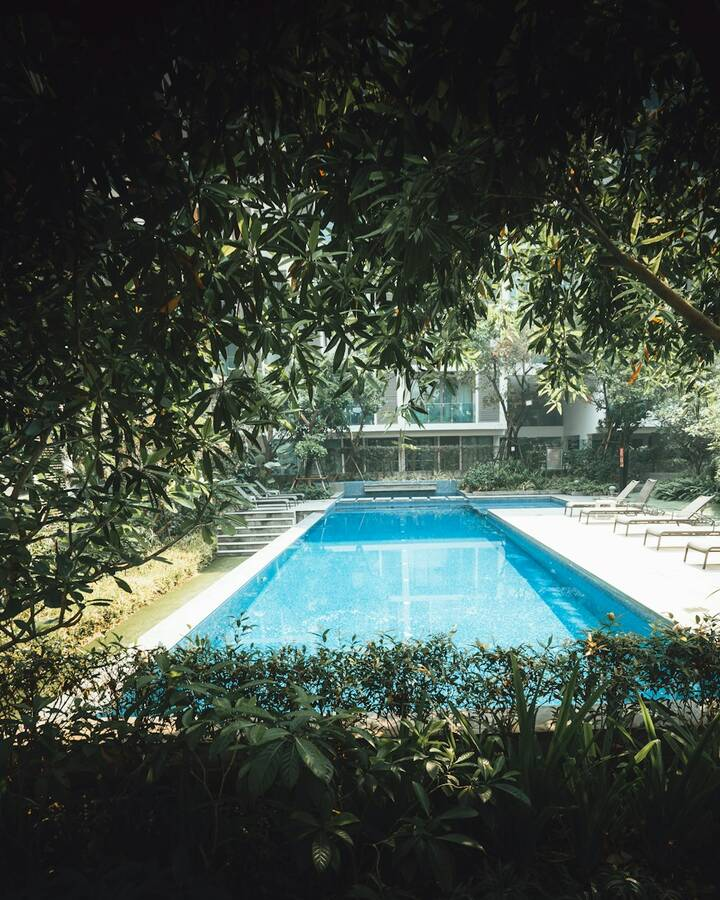
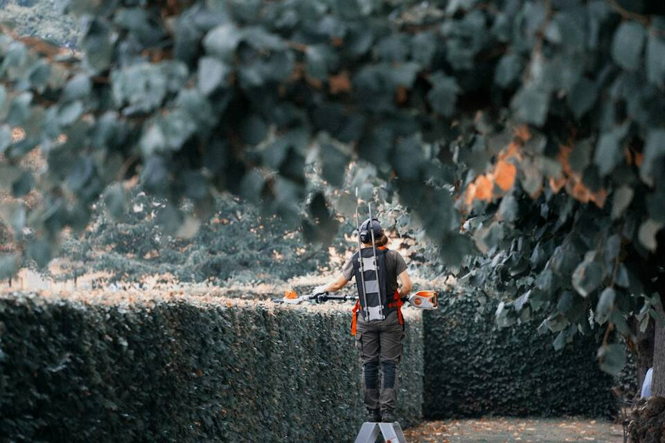
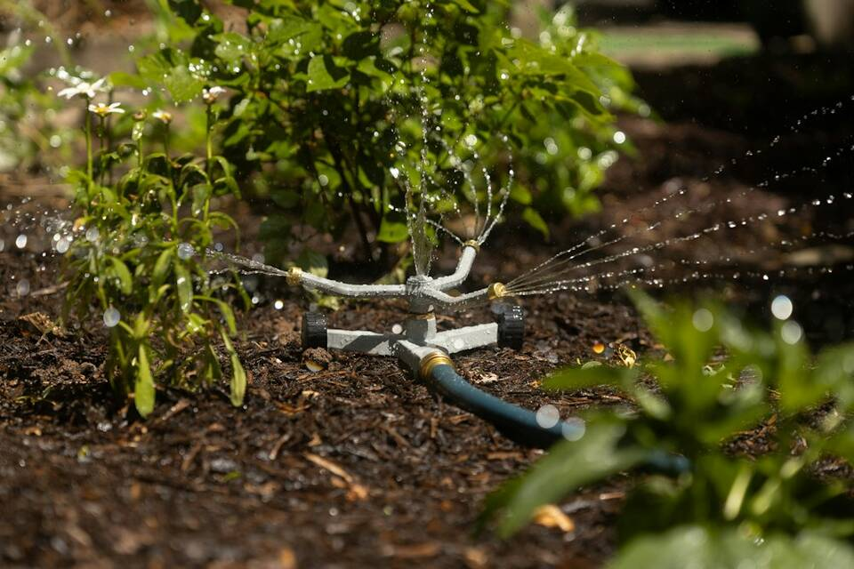

Tu jardín, nuestro compromiso.
Más de 10 años cuidando jardines y piscinas en Cartagena y toda la Región de Murcia. Cuidamos cada detalle para que tus zonas verdes estén sanas y tu piscina impecable durante todo el año.
Ver serviciosServicios
Jardinería y piscinas, de la poda más alta al mantenimiento de cada semana. Toca un servicio para ver qué incluye.
Podas en altura
¿Tienes árboles muy altos que necesitan un buen repaso? Hacemos podas en altura de árboles ornamentales y palmeras, con la formación y el equipo necesarios para trabajar con seguridad y precisión, incluso en los ejemplares más altos y complicados. No solo quitamos ramas secas o peligrosas: cuidamos la estructura del árbol para que crezca sano y fuerte, sin riesgos para personas ni casas cercanas.
- Seguridad garantizada
- Corte preciso y saludable
- Eliminación de riesgos
Trasplantes
Mover un árbol o un arbusto sin dañar sus raíces requiere cuidado. Analizamos el tipo de planta, elegimos la mejor época del año, preparamos el terreno y cuidamos cada detalle para que se adapte bien a su nuevo sitio. Si hace falta, aplicamos tratamientos después del trasplante para ayudarla a superar el cambio.
- Mayor tasa de éxito
- Cuidado especializado
- Ahorro de tiempo y esfuerzo
Abonado
Un jardín bonito empieza por un suelo sano. Estudiamos qué nutrientes necesita tu terreno y aplicamos los productos adecuados para tu césped, tus árboles y tus plantas, siempre respetando el medio ambiente. Así crecen más fuertes, con más color y más resistencia a plagas y enfermedades.
- Nutrientes adecuados para cada planta
- Mejor salud y crecimiento
- Uso responsable y sostenible
Instalación de riegos
No hay dos jardines iguales, así que diseñamos el riego a medida: goteo, aspersión o lo que mejor encaje en tu espacio. El agua llega justo donde hace falta, sin desperdicio, y te ahorra tiempo y dinero. También te ayudamos a programarlo según la temporada y lo que necesitan tus plantas.
- Diseño eficiente y personalizado
- Ahorro de agua y dinero
- Comodidad y tranquilidad
Tratamientos fitosanitarios
Una plaga o una enfermedad puede arruinar un jardín en poco tiempo. Identificamos qué problema afecta a tus plantas y aplicamos el tratamiento más eficaz, siempre con productos homologados y seguros para tus plantas, tu familia y tus mascotas.
- Diagnóstico profesional
- Tratamientos eficaces y seguros
- Prevención a largo plazo
Mantenimiento de jardines
Nos ocupamos de que tu jardín esté siempre perfecto sin que tengas que preocuparte: corte de césped, poda de arbustos, control de malas hierbas, limpieza de hojas, revisión del riego y lo que haga falta. Puedes contratarlo de forma periódica (semanal, quincenal o mensual) o para un trabajo puntual.
- Jardín siempre perfecto
- Ahorro de tiempo y esfuerzo
- Atención profesional
Mantenimiento de piscinas
Una piscina en buen estado necesita atención constante. La limpiamos, revisamos y ajustamos el cloro y el pH, controlamos los filtros y la depuración, y la preparamos para la apertura y el cierre de temporada. Agua limpia, segura y lista para el baño todo el año.
- Agua limpia y segura todo el año
- Revisión completa de equipos
- Preparación para cada temporada
Opiniones de clientes
«Gran profesional. Se recomienda totalmente. No cambies nunca, se compromete con todos sus trabajos.»
Antonia «Formal, buen profesional y precio correcto.»
Ricardo «Excelente jardinero, profesional y buena persona. Seriedad y puntualidad.»
Juan Antonio
Conócenos
- Daniel Baños Martínez
- Técnico Superior en Gestión Forestal (2012)
- En el oficio desde 2015
- Desde Cartagena a toda la Región de Murcia
En Gardaniel's llevamos más de 10 años dedicados a la jardinería y al mantenimiento de piscinas. Estamos en Cartagena y trabajamos en toda la Región de Murcia, con un trato cercano y un servicio hecho a medida.
Desde el principio seguimos una idea: cuidar cada espacio como si fuera nuestro propio jardín o nuestra propia piscina. Cada cliente es distinto, así que adaptamos cada trabajo a lo que necesita, con un trato honesto y profesional.
La clave está en los pequeños detalles, en hacer las cosas bien desde el principio y en acompañarte en el mantenimiento para que disfrutes de tu casa sin preocupaciones.
Nuestros valores
- Experiencia
- Confianza
- Adaptabilidad
- Resultados
Cómo trabajamos
- Nos cuentas qué necesitasPor teléfono o WhatsApp.
- Vamos a verloY te damos un presupuesto sin compromiso.
- Hacemos el trabajoCuando te venga bien.
- Si quieres, seguimos cuidándoloCon un mantenimiento periódico.
Trabajos





Consúltanos sin compromiso
677 768 231Llámanos, escríbenos por WhatsApp o mándanos un correo y te respondemos lo antes posible.
- Teléfono y WhatsApp
- +34 677 768 231
- Horario
- Lunes a domingo, de 9:00 a 17:00
- Dónde
- Cartagena (Murcia) y toda la Región de Murcia